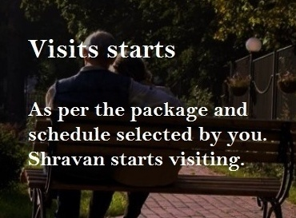

WHY SHRAVAN CARE?
Companion For Elderly
We understand that living away from your parents is not easy for them, and travelling alone is always a challenge for them. Often both, the child and the parent do so due to external reasons beyond their control like, job in another city, married, settled abroad etc. ShravanTM provides companionship to the elderly living/travelling alone. Trustworthyness is a key for establishing a strong relationship & we are committed to it. We not only strive to support your near and dear ones, but also want to develop a caring relationship with them. We provide one-on-one attention and care that you always desired for.
Let us provide your parent's a high quality care
Shravan is a trustworthy, well-trained companion, who helps the elderly feel better and secured. We specialize in care and daily living assistance to the elderly to assist them to fight the loneliness, which has a wide range of negative effects on both the physical and the mental health of the individuals.
Shravan.org has a sophisticated system of selecting/ training/ tracking the caregivers whom we call Shravan, a trustworthy individual who can take care of the elderly in the absence of their children.

Shravan at your service!
We realize no one can replace the love and care of a child to their parents, but if anyone comes closer, then it is Shravan. Shravan can be considered as a Surrogate child who can take away the worries of a son working in another city or a daughter married in another state. Now they have someone who can visit their parents on a regular basis, and take away their loneliness. and also available in case of emergency.
WHAT DO WE DO
Beyond Medical Assitance
Recovering from home after a medical procedure can limit elderly persons daily activities. Whether they are recovering from minor/ major surgery, fracture, hip/knee replacement etc, our compassionate caregivers can assist the elderly to a healthy and complete recovery along with assisting them in basic needs, like visiting doctors, getting x-ray/ CT scan etc which cant be done at the doorstep.
Avoiding Loneliness Ailments
It is medically proven that the loneliness of the elderly causes many mental and physical disease which are mainly caused due to inactivity of the brain muscles. Shravan's are specially trained to engage the elderly in various non-exhaustive mental and physical activities like playing games, going for a walk, teaching new mobile operations, etc which keeps their mind and body healthy.
Always With you, In need
Shravan are highly trained caregivers provide the highest quality of care to the elderly in a wide range of services, may it be visiting a local pilgrimage or assisting the elderly on an international trip, Shravan is always available at your service.
HOW IT WORKS

WANT TO KNOW MORE?
we know your concerns and are willing to help you out.
CHARDHAM YATRA BY SHRAVAN!


Any Queries?